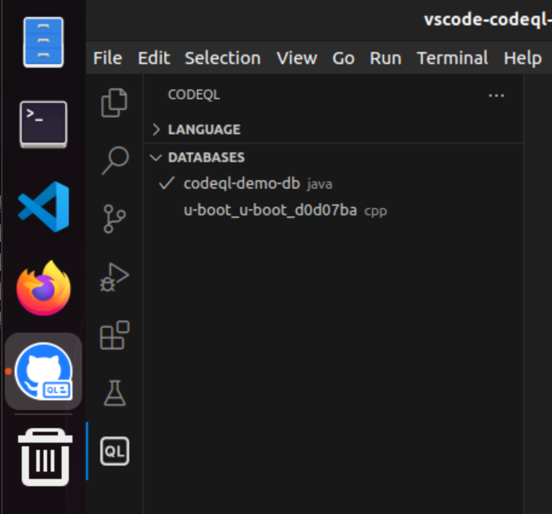
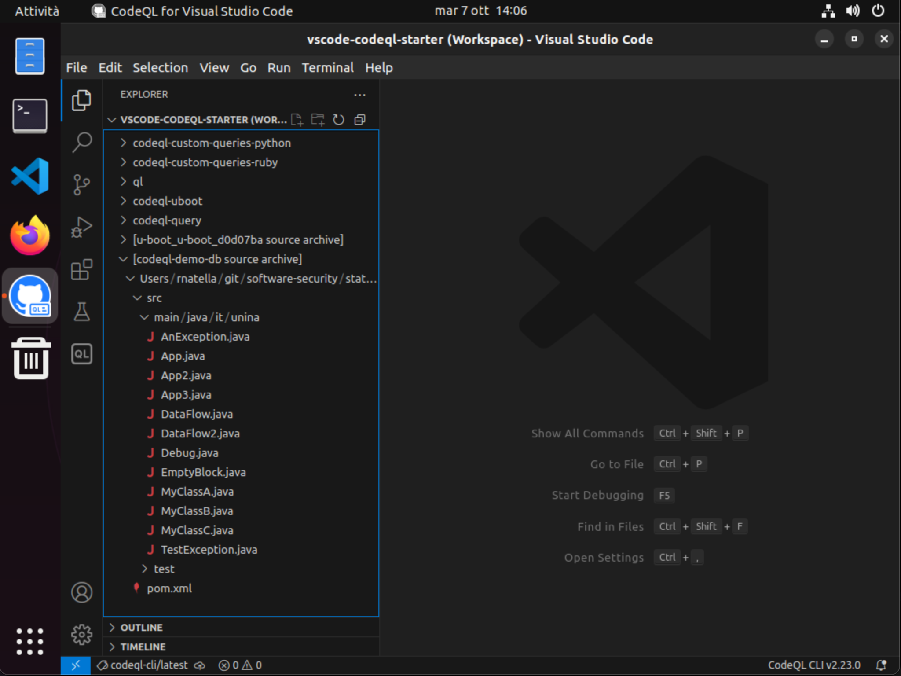
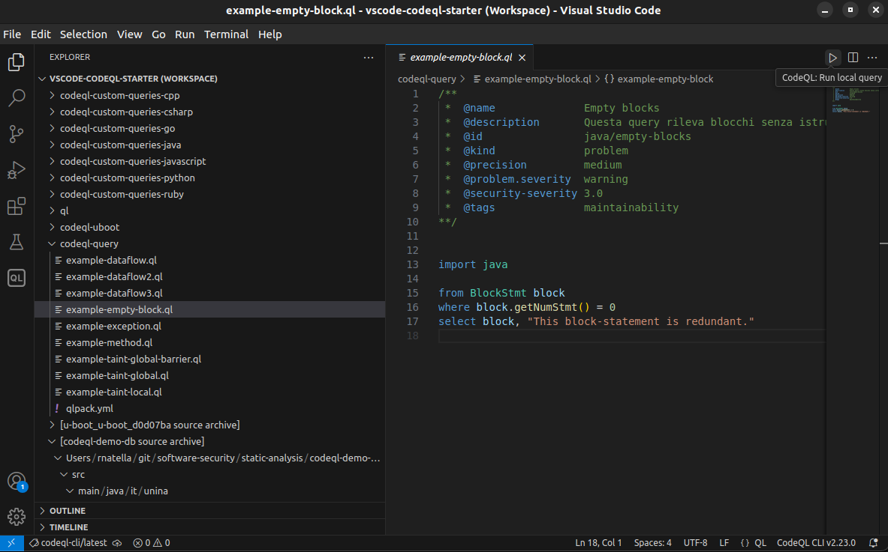
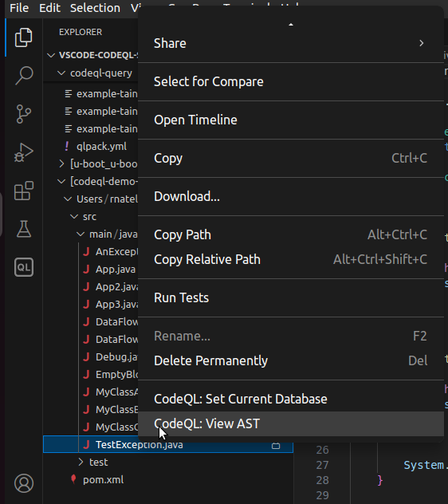
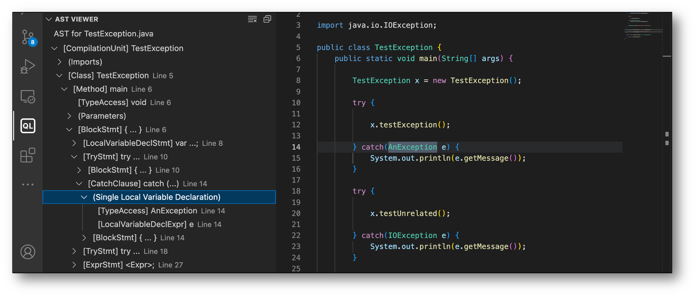
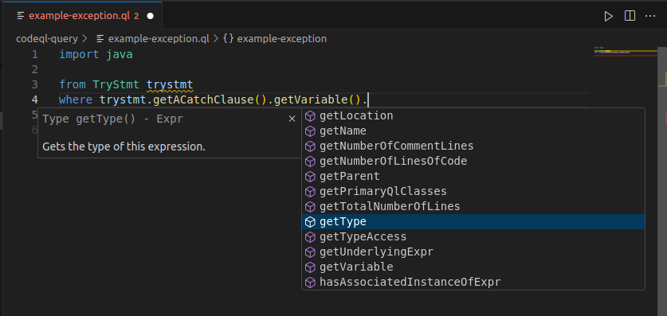
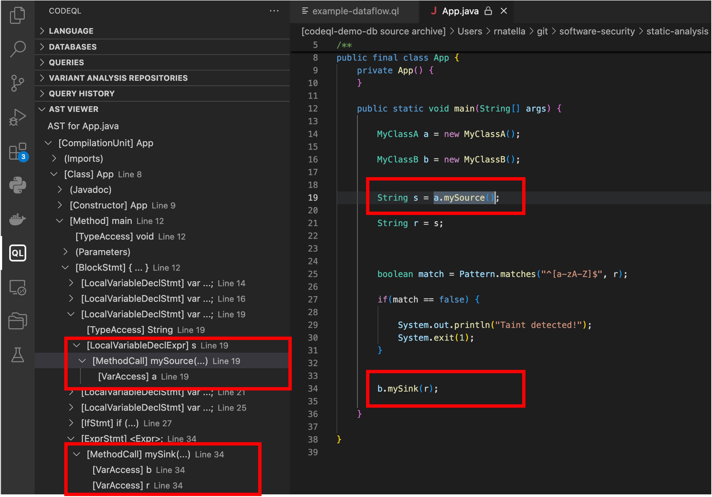
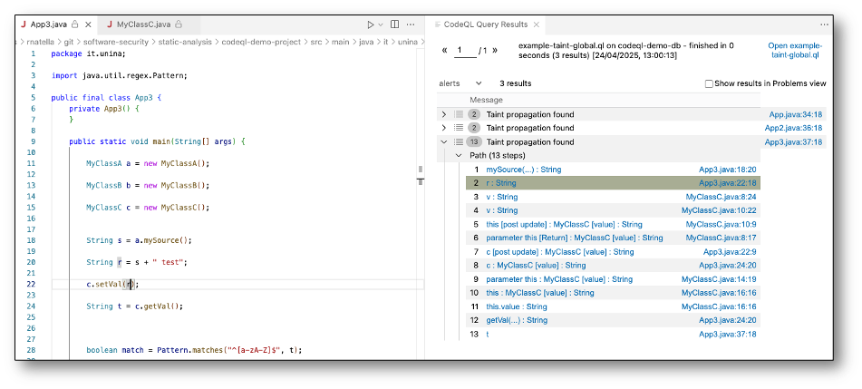

Static analysis
CodeQL - query puntuali
Sono qui mostrati alcuni esempi di analisi statica su piccoli programmi, tramite il framework CodeQL. Sia il codice dei programmi da analizzare, sia il codice delle query, sono disponibili nella macchina virtuale nella cartella swsec-labs/static-analysis/, e nel repository online su https://github.com/swsec-book/swsec-labs.
Posizionatevi nella cartella codeql-demo-project, ed effettuate il build del progetto per verificarne il corretto funzionamento.
$ cd codeql-demo-project
$ mvn clean install
Per creare un database CodeQL del progetto, ripetere il build del progetto tramite il comando codeql come segue.
$ codeql database create "codeql-demo-db" --language=java
Il database è già disponibile nel file codeql-demo-db.zip cartella.
Avviare VSCode con il workspace fornito con CodeQL, tramite la scorciatoia fornita sul desktop della macchina virtuale, oppure tramite il seguente comando.
code ~/vscode-codeql-starter/vscode-codeql-starter.code-workspace
Nella barra laterale di VSCode, clickate sulla icona della estensione CodeQL (simbolo "QL"). Nella sezione database utilizzare la funzione di import del database, selezionando il file zip del database del progetto di esempio.

Nella barra laterale di VSCode, clickate sulla icona della sezione Explorer (prima icona). Da lì è possibile visualizzare il codice sorgente della applicazione, che è stato incluso nel database appena importato.

Sempre nella sezione Explorer, nella sotto-cartella codeql-query, sono presenti vari file con estensione .ql contenenti le query di questo esempio.
La query di esempio in example-empty-block.ql cerca blocchi IF in programmi Java che non hanno alcuna istruzione al loro interno. È possibile lanciare la query clickando sulla icona di esecuzione in alto a destra (CodeQL: Run local query), oppure cliccando sul nome del file .ql e selezionando CodeQL: Run Queries in Selected Files.
import java
from BlockStmt block
where block.getNumStmt() = 0
select block, "This block-statement is redundant."

La query rileva il seguente codice (EmptyBlock.java).
package it.unina;
public class EmptyBlock {
int write(int[] buf, int size, int loc, int val) {
if (loc >= size) {
// return -1;
}
buf[loc] = val;
return 0;
}
}
La seguente query (example-exception.ql) cerca tutte le occorrenze di blocchi CATCH in cui l'eccezione gestita sia di tipo AnException.
import java
from TryStmt trystmt
where trystmt.getACatchClause()
.getVariable()
.getType()
.getName() = "AnException"
select trystmt,"Try-catch block found!"
CodeQL rileva una occorrenza del pattern nel file TestException.java.
Ai fini di scrivere query CodeQL, è utile ispezionare lo Abstract Syntax Tree (AST) di un programma contenente il pattern di interesse. In questo caso, è possibile utilizzare la funzione CodeQL: View AST, cliccando con il tasto destro sul nome del file TestException.java.


Lo AST mostra che:
- Il blocco TRY è rappresentato dalla classe
TryStmt - La classe
TryStmtcontiene un riferimento a unBlockStmt, e un riferimento aCatchClause - La classe
CatchClausecontiene una dichiarazione di variabile, il cui tipo rappresenta la eccezione gestita.
Nello sviluppo delle query, è possibile partire dai nomi delle classi nello AST, e consultare i metodi forniti da ogni classe usando l'ambiente di sviluppo. L'elenco dei metodi è consultabile tramite i tasti CONTROL + SPAZIO.

CodeQL - query di data flow
CodeQL permette di cercare flussi di dati all'interno di un programma, ad esempio per rilevare vulnerabilità di tipo injection. Nella query CodeQL, è possibile definire i punti del programma che rappresentano fonti di dati (source) e i punti del programma che rappresentano destinazioni "pericolose" (sink), come ad esempio le funzioni che accedono ad un database nel caso di SQL injection. CodeQL verificherà la presenza di flussi tra tutti i source e tutti i sink identificati dalla query.
CodeQL permette due tipi di query di analisi data flow.
-
Analisi intra-procedurale (local):
- Analizza i flussi all'interno di una singola funzione
- Peso computazionale leggero
- Utilizza i predicati localFlow() e localTaint()
-
Analisi inter-procedurale (global):
- Analizza i flussi che attraversano più funzioni
- Peso computazionale elevato
- Utilizza i predicati isSource() e isSink()
Inoltre, CodeQL distingue tra "Dataflow analysis" e "Taint analysis". In entrambi i casi, analizza i flussi di dati nel programma. Nel caso di Dataflow analysis, CodeQL è più conservativo nella ricerca dei flussi, focalizzandosi solo su quelli che sia sicuro siano percorribili, per evitare i falsi allarmi; invece, nel caso di Taint analysis, CodeQL include anche flussi che sono potenzialmente non percorribili, aumentando la possibilità di falsi allarmi.
Ad esempio, nel seguente codice, è presente un flusso tra il valore di ritorno della funzione mySource(), e il valore di ingresso della funzione mySink().
Il flusso include una operazione "non-value-preserving", in cui la variabile s è combinata con una stringa nel corso del flusso. Questa modifica potrebbe vanificare un eventuale attacco. Nel caso di Dataflow analysis, i flussi con operazioni "non-value-preserving" sono ignorati, per evitare falsi allarmi. Nel caso di Taint analysis, questi flussi sono tenuti in considerazione.
String s = a.mySource();
String r = s + " test"; // operazione "non-value-preserving"
...
b.mySink(r);
Il seguente esempio mostra una query di taint analysis di tipo intra-procedurale, ricercando i flussi tra le funzioni mySource() e mySink(). La query è nel file example-taint-local.ql.
import java
import semmle.code.java.dataflow.DataFlow::DataFlow
import semmle.code.java.dataflow.TaintTracking
from MethodCall a, MethodCall b, VarAccess arg
where a.getCallee().getName() = "mySource" and
b.getCallee().getName() = "mySink" and
arg = b.getAnArgument() and
TaintTracking::localTaint(exprNode(a), exprNode(arg))
select arg, "data flow found"
La query rileva due risultati, nei file App.java (ha un flusso con solo operazioni value-preserving) e App2.java (include una operazione non-value-preserving, come nell'esempio precedente).

Se si modifica la query precedente, usando il predicato localFlow() al posto di localTaint(), viene rilevato solo il flusso in App.java, ma non in App2.java.
Il seguente esempio mostra una query di taint analysis di tipo inter-procedurale. Anche in questo caso, si cercano flussi tra le funzioni mySource() e mySink(). Le query inter-procedurali richiedono di usare il costrutto module del linguaggio CodeQL, in cui definire i due predicati che identificano i source e i sink della analisi. In questo caso, si ricercano i source appartenenti alla classe MyClassA, e i sink appartenenti alla classe MyClassB. La query è nel file example-taint-global.ql.
/**
* @kind path-problem
* @id java/my-taint-propagation
* @precision high
* @security-severity 9.9
* @problem.severity error
**/
import java
import semmle.code.java.dataflow.TaintTracking
module MyTaintConfig implements DataFlow::ConfigSig {
predicate isSource(DataFlow::Node source) {
exists(MethodCall ma |
source.asExpr() = ma and
ma.getCallee().getName() = "mySource" and
ma.getCallee().getDeclaringType().getName() = "MyClassA"
)
}
predicate isSink(DataFlow::Node sink) {
exists(VarAccess arg, MethodCall mb |
sink.asExpr() = arg and
arg = mb.getAnArgument() and
mb.getCallee().getName() = "mySink" and
mb.getCallee().getDeclaringType().getName() = "MyClassB"
)
}
}
module MyTaint = TaintTracking::Global<MyTaintConfig>;
import MyTaint::PathGraph
from MyTaint::PathNode source, MyTaint::PathNode sink
where MyTaint::flowPath(source, sink)
select sink.getNode(), source, sink, "Taint propagation found"
La query riporta tre risultati. Oltre ai flussi nei file App.java e App2.java dell'esempio precedente, la query rileva un flusso inter-procedurale nel file App3.java.
